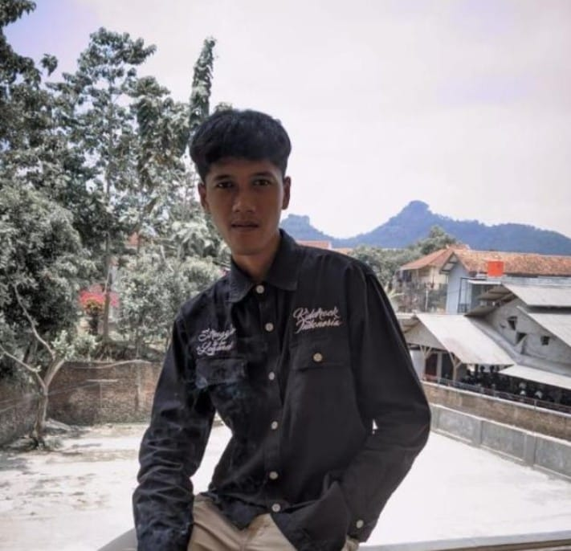

Rully Iksan Risandy
Web Developer & UI/UX Enthusiast
Membangun pengalaman digital yang imersif dengan kode dan kreativitas. Futuristik & elegan.

About Me
saya Rully, mahasiswa Universitas Sebelas April, Fakultas Teknologi Informasi, Prodi Sistem Informasi Semester IVB.
Sumedang, Indonesia | Remote
Freelance & Full-time
Keahlian Utama
HTML590%
CSS3 / Tailwind85%
JavaScript80%
UI/UX Design75%
Responsive Design88%
Education Timeline
- 2024 - Sekarang: UNIVERSITAS SEBELAS APRIL - Sistem informasi
- 2022: SMA 2 CIMALAKA
Portfolio
Let's Connect
Informasi Kontak
rullyiksan19@gmail.com
+62 812 3456 7890